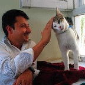
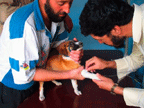

Our Mission
The Afghan Stray Animal League is a
private non-profit organization in the U.S. that operates
and supports a shelter and low-cost veterinary clinic for
homeless, abandoned, sick or injured small animals in
Afghanistan. The shelter is located in a refurbished house
in Kabul, the Afghan capital, which has a large population
of neglected street dogs and cats as well as thousands of
backyard animals such as goats and donkeys whose owners
cannot afford treatment for them.
The shelter has
been open full-time since the fall of 2004. It can
comfortably house about 20 dogs and about 30 cats, and we
have helped more than 400 animals so far. The shelter has a
full-time Afghan staff including a veterinarian, an
assistant veterinarian and manager. It has a fully stocked
pharmacy and a small surgical clinic. The shelter staff
accepts any animal that is brought to the door for help,
including treatment of injuries, vaccinations, deworming,
bathing and treatment of skin diseases. We have a car and
driver to pick up any small animal that is injured, sick or
found by someone who cannot bring it to the
shelter.
One of our major
goals is to reduce the population of unwanted street
animals. We offer both neutering and spaying of cats and
dogs, in consultation with international veterinarians who
visit the shelter or work with the national university
veterinary school. No fees are charged for any services,
although any foreign pet owners who come for vet care are
asked for donations to cover the cost of vaccines and
medicines. Our policy on euthanasia is that this should be
used only as a last resort in the case of severe trauma or
untreatable illness.
Our primary
mission is to care for needy small animals, restore them to
health and find them loving homes. Most of those who adopt
our animals are foreigners, and we are able to arrange to
ship their rescued pets home if needed. We are also working
to foster and encourage a culture of companion animal
ownership in Afghanistan. The country has been devastated
by war and poverty, and there is widespread neglect, abuse
and fear of animals. We provide free dog houses, food,
vaccines and other supplies to any Afghan who adopts a pet,
and we conduct home visits to ensure the animal is being
well treated. We also offer free talks at local
non-profit children’s programs about the humane treatment
of animals.